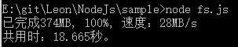

var fs=require('fs');
文件系统模块用来访问磁盘上的文件，是 Node 有别于其他框架的核心模块之一。它模仿了文 件 I/O 的 POSIX 风格。这个独特的模块为它所有的功能都提供了异步和同步的方 法。但是，我们强烈建议你使用异步的方法，除非你是用 Node 来创建命令行脚本。 即使这样，通常使用异步版本也会更好，虽然会增加一点点代码，但你可以并行访 问多个文件，并缩减脚本运行的时间。
在本模块中的函数分为两个部分,如:unlink()和unlinkSync(),他们的功能是一样的,只是unlink()是同步类型,参数为回调函数,而unlinkSync()中是没有回调函数的.
//异步函数:
fs.unlink('/tmp/hello',function(err){
if(err) throw err;
console.log('successfully deleted /tmp/hello');
});
//同步函数
fs.unlinkSync('/tmp/hello');
console.log('successfully deleted /tmp/hello');
同步类型的方法并没有固定的执行顺序,如下面的方法就可能出错:
fs.rename('/tmp/hello','/tmp/world',function(err){
if(err) throw err;
console.log('rename completed');
})
fs.stat('/tmp/world',function(err,stats){
if(err) throw err;
console.log('stats: '+JSON.stringfy(stats));
})
fs.stats很可能在fs.rename之前被执行,就会发生错误.下面是正确的调用方法:
fs.rename('/tmp/hello','tmp/world',function(err){
if(err) throw err;
fs.stat('tmp/world',function(err,stats){
if(err) throw err;
console.log('stats: '+JSON.stringfy(stats));
})
})
在很繁忙的系统中,强烈建议使用异步类型的函数.因为同步的,在它没有执行结束前,将阻塞整个进程.
Node 中的许多组件提供了连续输出或可连续处理输入的功能。 为了让这些组件行为一致，stream API 提供了一个抽象的接口,提供了常用的方法，以及数 据流具体实现时需要使用的属性。数据流分为可读、可写和可读写。所有的流都是 EventEmitter 的实例，也就是说可以主动触发事件。
可读的数据流 API 是一组方法和事件，提供了数据源在发送时访问数据块的功能。 基本上，可读数据流是与触发 data 事件相关的。这些事件流就代表了数据的流形 式。为了更加可控，数据流还提供了一些功能让你可以配置返回数据的大小和速度。
//创建最基本的可读文件流
var fs=require('fs');
var filehanle=fs.readFile('../../someJson.txt',function(err,data){
if(err){
console.log(err);
}else{
console.log(data);
}
})
//输出<Buffer 2f 2f e5 ae 9a e4 b9 89 e4 b8 80 e4 b8 aa e6 96 b9 e6 b3 95 e8 bf 94 e5 9b 9e 6a 73 6f 6e e6 a0 bc e5 bc 8f e7 9a 84 e5 86 85 e5 ae b9 0d 0a 66 75 6e ... >
上面的例子从一个文件里把数据分块读取。每当一个新的数据块准备好的时候，它会把数据以变量 data 的形式传给回调函数。在这个例子里，我们只是简单地把数据记录到终端。但在实际使用场景中，你可以把数据以流的形式 发送到其他地方，或者把它积攒起来，然后再一并处理。
有时候我们需要等待完整的数据都可用后再进行操作，在这种情况下就会用到数据池模式（spooling pattern）。重点是不要让 Node 的事件循环阻塞，我们使用数据流 来读取数据，但只有在接收到足够的内容后才使用这些数据。通常“足够”的意思 是指数据流已经结束，当然也可能是其他条件。
var fs=require('fs');
var readStream=fs.createReadStream('../../someJson.txt');
var spool='';
readStream.on('data',function(chunk){
spool+=chunk;
})
readStream.on('end',function(){
console.log(spool);
})
//文本被正确的输出到控制台
这个地方的写法有一些潜在的问题，如果写入的速度跟不上读取的速度，有可能导致数据丢失，正常的情况应该是，写完一段，再读取下一段，如果没有写完，就让读取流暂停，写完后再继续。
var fs=require('fs');
var readStream=fs.createReadStream('../../someJson.txt');
var writeStream=fs.createWriteStream('./fs.txt');
//数据流会自动的读入读出，不用添加额外的操作
readStream.on('data',function(chunk){
//如果没有写入完，暂停读取流
if(writeStream.write(chunk)===false){
console.log('pause');
}
})
//当缓冲区被输出完后，继续读取
writeStream.on('drain',function(){
readStream.resume();
})
//当没有数据时，关闭数据流
readStream.on('end',function(){
writeStream.end();
})
//正确的复制文件
NodeJs中drain事件是和socket.write的返回值强关联的，官方文档中这样描述：
Returns true if the entire data was flushed successfully to the kernel buffer. Returns false if all or part of the data was queued in user memory. ‘drain’ will be emitted when the buffer is again free.
即当写入流开始缓存的时候，我们停止写入，等buffer flush完，我们再继续写入，通过这种形式，我们可以控制发送数据的速率。
可以使用更为直接的pipe
var fs=require('fs');
//pipe自动调用了data，end等事件
fs.createReadStream('../../data.txt').pipe(fs.createWriteStream('./fs.txt'));
copy.js 复制文件脚本
我们可以做一个更加完善的复制文件的程序。
var fs = require('fs'),
path = require('path'),
//控制系统的标准输入输出完成复制实时指示
out = process.stdout;
var filePath = 'F://rar2.rar';
var readStream = fs.createReadStream(filePath);
var writeStream = fs.createWriteStream('./TED2.rar');
var stat = fs.statSync(filePath);
var totalSize = stat.size;
var passedLength = 0;
var lastSize = 0;
var startTime = Date.now();
readStream.on('data', function(chunk) {
passedLength += chunk.length;
if (writeStream.write(chunk) === false) {
readStream.pause();
}
});
readStream.on('end', function() {
writeStream.end();
});
writeStream.on('drain', function() {
readStream.resume();
});
setTimeout(function show() {
var percent = Math.ceil((passedLength / totalSize) * 100);
var size = Math.ceil(passedLength / (1024*1024));
//在0.5秒内的传输数据量之差，用来计算平均速度
var diff = size - lastSize;
lastSize = size;
//控制控制台输出信息
out.clearLine();
out.cursorTo(0);
out.write('已完成' + size + 'MB, ' + percent + '%, 速度：' + diff * 2 + 'MB/s');
if (passedLength < totalSize) {
setTimeout(show, 500);
} else {
var endTime = Date.now();
console.log();
console.log('共用时：' + (endTime - startTime) / 1000 + '秒。');
}
}, 500);
我们设置一个递归的定时器来监控复制进度，效果如下图：
结合nodejs的readline， process.argv等模块，我们可以添加覆盖提示、强制覆盖、动态指定文件路径等完整的复制方法。也可以保存为copy.js来执行自己的复制脚本，也可以使用
ln -s /path/to/copy.js /usr/local/bin/mycopy //未尝试来替代系统的cp命令。 引用自：
https://segmentfault.com/a/1190000000519006
虽然说 JavaScript 支持字节位操作，但它并没有二进制数据的原生表现形式。当你考虑到 JavaScript 里数字类型系统的限制时，更是会头疼不已，最后会变成只好采用二进 制形式。Node 带来了 Buffer 类，为你操作二进制数据弥补了短板。
Buffer 是 V8 引擎上的扩展，实际上是对内存的直接分配。 JavaScript 的其他数据类型都把存储数据的复杂性进行了抽象，而 Buffer 与它们不 同，它提供的是内存的直接操作。创建了一个 Buffer 后，它的大小就固定了。如 果你需要添加更多的数据，就必须把老的 Buffer 复制到一个更大的 Buffer 中。 Buffer 能够在服务器上快速地处理大 量的数据操作，但为了性能而牺牲了一些程序员的开发便利。
利用 8 位字节(octer byte)，我们就可以表示从 0 到 255 间的所有数字了。但 8 个 0 和 1 组成的字节并不够方便， 所以十六进制(hex)表示法便流行起来。在 JavaScript 中，用一个十六进制值表示数字时，需要在其十六进制数值前添加 0x 标记。在 Node 里，你会常常看见 console. log() 输出，或是在 Node 命令行中，Buffer 值是采用十六进制表示的。
//用8位字节数组创建一个3字节的Buffer var buffer=new Buffer([255,0,149]); console.log(buffer); //输出<Buffer ff 00 95>
那么二进制如何表示其他类型的数据呢？在网络协议中，通常会指定一些字符来传达信息，比如用固定位置上的比特 来表示特殊的含义。举个例子，在 DNS 请求中，头两个字节表示的数字是事务 ID， 下一个字节的每个比特都是独立使用的，每一位表示了在这个请求中是否使用 DNS 的某个功能。
二进制使用最多的字符串编码方式是 ASCII 和 UTF（通常是 UTF-8）。这些编码方式定义了如何把比特转换成字符。 编码的工作原理就是采用一个查找表把字符映射到对应的数字上。计算机只要通过查找转换表，就能把数字变成字符。
ASCII 字符（其中包含非可见字符，如回车）一定是正好每个都是 7 位大小的，因 此能表示 0 到 127 之间的数值。字符中的第 8 位比特通常用来扩展字符集，表示各种国际化的字符（如 ȳ 或 ȱ）。
UTF 则要复杂一些。它的字符集包含了非常多的字符，包括许多国际化字符。每个UTF-8 字符需要至少 1 个字节，最多的时候需要 4 个字节才能表示。实质上，头 128 个值是传统的 ASCII，其他的值被推到了映射表的更远的地方，通过更大的数字来表 示。当一个罕见的字符被引用时，通过第一个字节表示的数字，会告诉计算机利用下 一个字节从映射表的第二页中查找字符的实际址。如果该字符不在映射表的第二页， 第二个字节会告诉计算机去查找第三页，以此类推。这意味着在 UTF-8 中，字符串对 应的长度并不是与字节数的长度一样。而 ASCII 中，这两个长度是永远一致的。
一旦你把内容复制到一个 Buffer 后，它就会以二进制的形式 存储起来。当然，你可以随时把 Buffer 中的二进制内容转换成其他形式，比如说字符串。Buffer 只由它的大小来定义，那么它需要多大才能把输入的特定字符串保存起来呢？ 一个 UTF 字符可能会占用最多 4 个字节,因此需要定义一个 Buffer 的大小为可能输入的 UFT 字符最大值的 4 倍大小。
创建 Buffer 可以使用 3 种参数：指定 Buffer 的字节长度，需要拷贝到 Buffer 里 的字节数组，或是需要拷贝到 Buffer 里的字符串。第一和最后一种方法是目前最 常使用的。在一些不常见的情况下，你会需要用一个 JavaScript 的字节数组。
//创建指定字节长度的Buffer var buffer=new Buffer(10); console.log(buffer); //输出<Buffer 05 00 00 00 01 00 00 00 00 00>
创建 Buffer 后，得到了一个对应长度的字节组。但是 Buffer 是从内存直接分配的，它并不会对原有的内容进行初始化，所以 得到的内容就是原本占用的东西。这与原生的 JavaScript 类型不同，它们会把所有的内存初始化，无论你是创建一个新的原生变量还是对象，它都不会把原本内存空间的垃圾数据返回给你。你可以用下面的情景来帮助理解。假设你到了一家繁忙的 咖啡店，想找一张桌子时，最快的方法就是一旦有人离开了就立马坐下来。虽然这 样很快，但是你会面对之前客人留下的脏盘子和剩菜。你也许希望等待服务员清理 桌子后再坐下。这与 Buffer 和原生类型的工作方式很像。Buffer 并不会为了让你 更方便而做额外的工作，但它们能让你直接快速地操作内存。如果你想要一组漂亮的全是 0 的比特组，就需要自己动手。
当你在处理网络传输协议之类的工作时，因为它们有着定义好的格式，所以创建指定字节长度的 Buffer 就很常用了。当你准确地知道数据的大小（或者是知道最大会是多少），并为了性能原因想分配并重用 Buffer 时，这就是很好的选择。
也许创建 Buffer 最常用的方法就是使用 ASCII 或 UTF-8 字符串了。虽然 Buffer 可以存储任何数据，但在处理 I/O 的字符数据时 Buffer 特别有用，因为 Buffer 本 身的一些限制使得它的操作比一般的字符串操作要快很多。所以当你在创建高度可扩展的应用时，通常值得采用 Buffer 来保存字符串，特别是当你只是在应用间分 流字符串，而不会修改它们的时候。因此，即使 JavaScript 原生存在了字符串类型， 在 Node 程序中还是会经常使用 Buffer 来保存字符串。
console.log(new Buffer('footbarbaz'));
console.log(new Buffer('footbarbaz','ascii'));
console.log(new Buffer('é'));
console.log(new Buffer('é','ascii'));
//输出
<Buffer 66 6f 6f 74 62 61 72 62 61 7a>
<Buffer 66 6f 6f 74 62 61 72 62 61 7a>
<Buffer c3 a9>
<Buffer e9>
我们用字符串来创建 Buffer，它默认是 UTF-8 编码的。但 Buffer 不会盲目地为每个字符分配 4 个字节，而是说明它不会截断字符内容。在这个例子中，我们看到当输入的字符串是小 写字母时，无论采用的是哪种编码方式，Buffer 都使用同样的字节结构，因为每 个字母都落在同样的区间里。但是，当我们输入“é”字符时，默认的 UTF-8 编码成 2 个字节大小。但是当我们指定编码为 ASCII 时，字符被截断成单个字节。
Node 提供了一些操作来简化字符串和 Buffer 操作。你只要把字符串作为参数传给创建 Buffer 的函数，可以使用 Buffer.byteLength() 方法来获得字符串在编码 上的字节长度或者 String.length 返回的字符个数。
var buffer=new Buffer('zhaoshuaiqiang');
console.log(Buffer.byteLength(buffer)); //14
console.log(buffer.length); //14
Buffer.write() 缓冲区写入
Buffer.write(string,[offset],[length],[encoding]) 将string使用指定的encoding写入到buffer的offset处。返回写入了多少个八进制字节。如果Buffer没有足够的空间来适应整个string,那么将只有string的部分被写入。对于 UTF-8 字符串来说，如果一个完整字符无法写入到 Buffer 的话，就不会单独写入该字符的某个字节。encoding默认为utf8.
var buffer=new Buffer(1); console.log(buffer); //输出buffer.write('a'); console.log(buffer); //返回1，输出 buffer.write('é'); console.log(buffer); //返回0，输出
在只有一个字节的 Buffer 中，它可以写入一个“a”字符，所以操作返回了 1，表 示写入了 1 个字节。但是，尝试写入一个“é”字符的时候，它需要 2 个字节，因此 操作返回的是 0，因为没有写入任何东西。
var buffer=new Buffer("ffffff");
console.log(buffer); //输出
buffer.write('ab',1);
console.log(buffer); //返回2，输出
源码：
Buffer.prototype.write = function(string, offset, length, encoding) {
// allow write(string, encoding)
if (util.isString(offset) && util.isUndefined(length)) {
encoding = offset;
offset = 0;
// allow write(string, offset[, length], encoding)
} else if (isFinite(offset)) {
offset = ~~offset;
if (isFinite(length)) {
length = ~~length;
} else {
encoding = length;
length = undefined;
}
// XXX legacy write(string, encoding, offset, length) - remove in v0.13
} else {
if (!writeWarned) {
if (process.throwDeprecation)
throw new Error(writeMsg);
else if (process.traceDeprecation)
console.trace(writeMsg);
else
console.error(writeMsg);
writeWarned = true;
}
var swap = encoding;
encoding = offset;
offset = ~~length;
length = swap;
}
var remaining = this.length - offset;
if (util.isUndefined(length) || length > remaining)
length = remaining;
encoding = !!encoding ? (encoding + '').toLowerCase() : 'utf8';
if (string.length > 0 && (length < 0 || offset < 0))
throw new RangeError('attempt to write beyond buffer bounds');
var ret;
switch (encoding) {
case 'hex':
ret = this.hexWrite(string, offset, length);
break;
case 'utf8':
case 'utf-8':
ret = this.utf8Write(string, offset, length);
break;
case 'ascii':
ret = this.asciiWrite(string, offset, length);
break;
case 'binary':
ret = this.binaryWrite(string, offset, length);
break;
case 'base64':
// Warning: maxLength not taken into account in base64Write
ret = this.base64Write(string, offset, length);
break;
case 'ucs2':
case 'ucs-2':
case 'utf16le':
case 'utf-16le':
ret = this.ucs2Write(string, offset, length);
break;
default:
throw new TypeError('Unknown encoding: ' + encoding);
}
return ret;
};
fs.rename(oldPath,newPath,[callback]);
fs.statSync(path,[callback])是同步版的stat()，该方法返回一个stat对象，包含文件中的基本信息。他们的回调函数拥有两个参数(err,stats),stats为fs.Stats对象.
//查询本地的一个文本文件
{ dev: 60980,
mode: 33206,
nlink: 1,
uid: 0,
gid: 0,
rdev: 0,
blksize: undefined,
ino: 281474976717998,
size: 278,
blocks: undefined,
atime: Tue Mar 08 2016 08:43:41 GMT+0800 (中国标准时间),
mtime: Tue Aug 25 2015 19:22:18 GMT+0800 (中国标准时间),
ctime: Thu Mar 24 2016 14:34:06 GMT+0800 (中国标准时间),
birthtime: Tue Mar 08 2016 08:43:41 GMT+0800 (中国标准时间) }
| stats方法 | 作用 |
|---|---|
| stats.isFile() | |
| stats.isDirectory() | |
| stats.isBlockDevice() | |
| stats.isCharacterDevice() | |
| stats.isSymbolicLink() | 只在fs.lstats()下可用. |
| stats.isFIFO() | |
| stats.isSocket() |
官方源码：
fs.statSync=function(path){
nullCheck(path);
return binding.stat(pathModule._makeLong(path));
}
类似的还有fs.fstat(fd,[callback])和fs.lstat(path,[callback])
fs.link(srcpath,dstpath,[callback]); fs.symlink(srcpath,dstpath,[type],[callback]); //type参数为dir,file或junction,只适合windows,其他平台type被忽略. //当用的是junction时,dstpath(destination path目标路径)要为绝对路径. //dstpath将会被自动标准化(normalized)为绝对路径. fs.readlink(path,[callback]); //回调函数拥有两个参数(err,linkString).
回调函数拥有两个参数(err,resolvePath).
var cache={'/etc':'/private/etc'};
fs.realpath(process.cwd()+"/etc/password",cache,function(err,resolvePath){
if(err) throw err;
console.log(resolvePath);
});
//删除目录 fs.rmdir(path [,callback]); //创建目录 fs.mkdir(path [,mode] [,callback]); //查询目录下文件 fs.readdir(path [,callback]); //回调函数拥有两个参数(err,files),files为path路径下文件名的数组.
//将缓冲区写入到文件 fs.write(fd,buffer,offset,length,position [,callback]); //buffer为写到fd的内容,在buffer中选择偏移量为offset长度为length的字符串写,在fd中开始位置为position的地方开始写入. //回调函数有三个参数(err,written,buffer). //将文件内容读取到缓冲区 fs.read(fd,buffer,offset,length,position [,callback]); //在buffer的offset位置写入fd文件中position位置开始的内容,内容长度为length. //回调函数有3个参数(err,bytesRead,buffer).
//读取文件的全部内容
fs.readFile(filename [,encoding] [,callback]);
//回调函数有两个参数(err,data),data为文件的内容.
//将内容写入到文件中
fs.writeFile(filename,data [,encoding] [,callback]);
//将内容添加到文件中去,文件不存在自动创建
fs.appendFile(filename,data,encoding="utf-8" [,callback]);
//当data为缓冲区数据时,encoding忽略不写,data可以为string或buffer.
//监视文件,在每次文件被使用时触发listener回调函数
fs.watchFile(filename [,options],listener);
//不稳定,如果可用,请使用fs.watch();
//options有两个选项:persistent 布尔值(文件被监视进程是否继续);interval 时间单位/毫秒(文件多长时间被查询一次).
fs.watchFile('message.text',function(curr,prev){
console.log('the current mtime is: '+curr.mtime);
console.log('the previous mtime is: '+prev.mtime);
})
fs.unwatchFile(filename [,listener]);
//不稳定,如果可用,使用fs.watch();
fs.watch(filename [,options] [,listener]);
//不稳定,不是所有的平台都通用
//目前只有Linux和windows平台提供了filename参数
fs.watch('somedir',function(event,filename){
console.log('event is: '+event);
if(filename){
console.log("filename provided: "+filename);
}else{
console.log("filename not provided.");
}
})
//fs.exists(path [,callback]);
fs.exists('etc/passwd',function(exists){
util.debug(exists?"it's there.":"no passwd file!");
})
//创建读取字符流
fs.createReadStream(path [,options]);
//options参数列表
{
flags:'r',
encoding:null/'utf-8'/'ascii'/'base64',
fd:null,
mode:0666,
bufferSize:64*1024
}//也包含start,end表示开始位置和起始位置
//创建写入字符流
fs.createWriteStream(path [,options]);
//options参数列表
{
flags:'w',
encoding:null,
mode:0666
}//也包括start允许从什么位置开始写入数据
//更改path路径下的文件的文件时间戳 fs.utimes(path,atime,mtime [,callback]); //更改有关该文件说明符的文件的文件时间戳 fs.futimes(fd,atime,utime [,callback]);
回调函数拥有两个参数(err,fd).
fd:fill description文件说明符
类似的还有fs.fchmod(fd,mode,[callback])和fs.lchmod(path,mode,[callback])